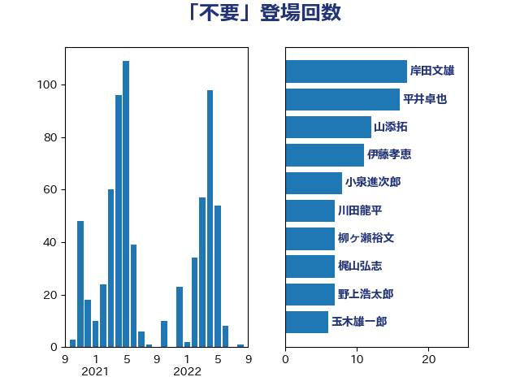

単語「不要」

| 岸田文雄 | 自由民主党 | 17 回 |
| 平井卓也 | 自由民主党 | 16 回 |
| 山添拓 | 日本共産党 | 12 回 |
| 伊藤孝恵 | 国民民主党 | 11 回 |
| 小泉進次郎 | 自由民主党 | 8 回 |
| 川田龍平 | 立憲民主党 | 7 回 |
| 柳ヶ瀬裕文 | 日本維新の会 | 7 回 |
| 梶山弘志 | 自由民主党 | 7 回 |
| 野上浩太郎 | 自由民主党 | 7 回 |
| 玉木雄一郎 | 国民民主党 | 6 回 |
| 青山大人 | 立憲民主党 | 6 回 |
| 奥野総一郎 | 立憲民主党 | 5 回 |
| 小沼巧 | 立憲民主党 | 5 回 |
| 小西洋之 | 立憲民主党 | 5 回 |
| 岸真紀子 | 立憲民主党 | 5 回 |
| 木原誠二 | 自由民主党 | 5 回 |
| 末松信介 | 自由民主党 | 5 回 |
| 浅野哲 | 国民民主党 | 5 回 |
| 自見はなこ | 自由民主党 | 5 回 |
| 萩生田光一 | 自由民主党 | 5 回 |
| 加藤勝信 | 自由民主党 | 4 回 |
| 大塚耕平 | 国民民主党 | 4 回 |
| 宮本徹 | 日本共産党 | 4 回 |
| 山下芳生 | 日本共産党 | 4 回 |
| 後藤茂之 | 自由民主党 | 4 回 |
| 新藤義孝 | 自由民主党 | 4 回 |
| 池下卓 | 日本維新の会 | 4 回 |
| 熊野正士 | 公明党 | 4 回 |
| 田村憲久 | 自由民主党 | 4 回 |
| 田村貴昭 | 日本共産党 | 4 回 |
| 阿部司 | 日本維新の会 | 4 回 |
| 塩田博昭 | 公明党 | 3 回 |
| 山口壯 | 自由民主党 | 3 回 |
| 山田賢司 | 自由民主党 | 3 回 |
| 岡本三成 | 公明党 | 3 回 |
| 岩谷良平 | 日本維新の会 | 3 回 |
| 梅村聡 | 日本維新の会 | 3 回 |
| 江島潔 | 自由民主党 | 3 回 |
| 牧山ひろえ | 立憲民主党 | 3 回 |
| 田村智子 | 日本共産党 | 3 回 |
| 礒崎哲史 | 国民民主党 | 3 回 |
| 米山隆一 | 立憲民主党 | 3 回 |
| 菅義偉 | 自由民主党 | 3 回 |
| 西村康稔 | 自由民主党 | 3 回 |
| 足立康史 | 日本維新の会 | 3 回 |
| 進藤金日子 | 自由民主党 | 3 回 |
| 高木かおり | 日本維新の会 | 3 回 |
| こやり隆史 | 自由民主党 | 2 回 |
| 上野通子 | 自由民主党 | 2 回 |
| 中谷元 | 自由民主党 | 2 回 |
| 井上信治 | 自由民主党 | 2 回 |
| 佐藤啓 | 自由民主党 | 2 回 |
| 前川清成 | 日本維新の会 | 2 回 |
| 古川禎久 | 自由民主党 | 2 回 |
| 吉田宣弘 | 公明党 | 2 回 |
| 堀井学 | 自由民主党 | 2 回 |
| 塩川鉄也 | 日本共産党 | 2 回 |
| 山田勝彦 | 立憲民主党 | 2 回 |
| 後藤祐一 | 立憲民主党 | 2 回 |
| 徳永久志 | 立憲民主党 | 2 回 |
| 打越さく良 | 立憲民主党 | 2 回 |
| 斉藤鉄夫 | 公明党 | 2 回 |
| 森屋隆 | 立憲民主党 | 2 回 |
| 武田良太 | 自由民主党 | 2 回 |
| 渡辺孝一 | 自由民主党 | 2 回 |
| 牧島かれん | 自由民主党 | 2 回 |
| 玄葉光一郎 | 立憲民主党 | 2 回 |
| 白石洋一 | 立憲民主党 | 2 回 |
| 矢倉克夫 | 公明党 | 2 回 |
| 石井準一 | 自由民主党 | 2 回 |
| 石川博崇 | 公明党 | 2 回 |
| 石川大我 | 立憲民主党 | 2 回 |
| 福島みずほ | 社会民主党 | 2 回 |
| 笹川博義 | 自由民主党 | 2 回 |
| 舟山康江 | 国民民主党 | 2 回 |
| 藤井比早之 | 自由民主党 | 2 回 |
| 赤羽一嘉 | 公明党 | 2 回 |
| 輿水恵一 | 公明党 | 2 回 |
| 道下大樹 | 立憲民主党 | 2 回 |
| 鈴木庸介 | 立憲民主党 | 2 回 |
| 長妻昭 | 立憲民主党 | 2 回 |
| 青木愛 | 立憲民主党 | 2 回 |
| 馬場伸幸 | 日本維新の会 | 2 回 |
| 高橋光男 | 公明党 | 2 回 |
| 麻生太郎 | 自由民主党 | 2 回 |
| ながえ孝子 | 無所属 | 1 回 |
| 三浦信祐 | 公明党 | 1 回 |
| 三谷英弘 | 自由民主党 | 1 回 |
| 上川陽子 | 自由民主党 | 1 回 |
| 上田清司 | 国民民主党 | 1 回 |
| 中島克仁 | 立憲民主党 | 1 回 |
| 井坂信彦 | 立憲民主党 | 1 回 |
| 伊佐進一 | 公明党 | 1 回 |
| 伊波洋一 | 無所属 | 1 回 |
| 伊藤孝江 | 公明党 | 1 回 |
| 伊藤岳 | 日本共産党 | 1 回 |
| 佐藤英道 | 公明党 | 1 回 |
| 古屋範子 | 公明党 | 1 回 |
| 古賀篤 | 自由民主党 | 1 回 |
| 吉田統彦 | 立憲民主党 | 1 回 |
| 吉良よし子 | 日本共産党 | 1 回 |
| 嘉田由紀子 | 無所属 | 1 回 |
| 國重徹 | 公明党 | 1 回 |
| 土田慎 | 自由民主党 | 1 回 |
| 坂本哲志 | 自由民主党 | 1 回 |
| 塩村あやか | 立憲民主党 | 1 回 |
| 大家敏志 | 自由民主党 | 1 回 |
| 大西英男 | 自由民主党 | 1 回 |
| 安江伸夫 | 公明党 | 1 回 |
| 寺田学 | 立憲民主党 | 1 回 |
| 小川淳也 | 立憲民主党 | 1 回 |
| 小林史明 | 自由民主党 | 1 回 |
| 小池晃 | 日本共産党 | 1 回 |
| 山井和則 | 立憲民主党 | 1 回 |
| 山崎誠 | 立憲民主党 | 1 回 |
| 山本剛正 | 日本維新の会 | 1 回 |
| 山本博司 | 公明党 | 1 回 |
| 山本香苗 | 公明党 | 1 回 |
| 山際大志郎 | 自由民主党 | 1 回 |
| 岡本あき子 | 立憲民主党 | 1 回 |
| 川合孝典 | 国民民主党 | 1 回 |
| 志位和夫 | 日本共産党 | 1 回 |
| 掘井健智 | 日本維新の会 | 1 回 |
| 斎藤嘉隆 | 立憲民主党 | 1 回 |
| 新垣邦男 | 立憲民主党 | 1 回 |
| 末松義規 | 立憲民主党 | 1 回 |
| 杉尾秀哉 | 立憲民主党 | 1 回 |
| 杉田水脈 | 自由民主党 | 1 回 |
| 東徹 | 日本維新の会 | 1 回 |
| 松川るい | 自由民主党 | 1 回 |
| 松沢成文 | 日本維新の会 | 1 回 |
| 林芳正 | 自由民主党 | 1 回 |
| 柚木道義 | 立憲民主党 | 1 回 |
| 武見敬三 | 自由民主党 | 1 回 |
| 沢田良 | 日本維新の会 | 1 回 |
| 河野太郎 | 自由民主党 | 1 回 |
| 浅田均 | 日本維新の会 | 1 回 |
| 渡辺創 | 立憲民主党 | 1 回 |
| 源馬謙太郎 | 立憲民主党 | 1 回 |
| 熊田裕通 | 自由民主党 | 1 回 |
| 片山大介 | 日本維新の会 | 1 回 |
| 田中健 | 国民民主党 | 1 回 |
| 田村まみ | 国民民主党 | 1 回 |
| 石井章 | 日本維新の会 | 1 回 |
| 石井苗子 | 日本維新の会 | 1 回 |
| 石原宏高 | 自由民主党 | 1 回 |
| 石垣のりこ | 立憲民主党 | 1 回 |
| 磯崎仁彦 | 自由民主党 | 1 回 |
| 福山哲郎 | 立憲民主党 | 1 回 |
| 福重隆浩 | 公明党 | 1 回 |
| 秋野公造 | 公明党 | 1 回 |
| 稲津久 | 公明党 | 1 回 |
| 穀田恵二 | 日本共産党 | 1 回 |
| 竹内譲 | 公明党 | 1 回 |
| 紙智子 | 日本共産党 | 1 回 |
| 舩後靖彦 | れいわ新選組 | 1 回 |
| 若宮健嗣 | 自由民主党 | 1 回 |
| 若松謙維 | 公明党 | 1 回 |
| 菊田真紀子 | 立憲民主党 | 1 回 |
| 藤川政人 | 自由民主党 | 1 回 |
| 藤巻健太 | 日本維新の会 | 1 回 |
| 藤木眞也 | 自由民主党 | 1 回 |
| 藤田文武 | 日本維新の会 | 1 回 |
| 角田秀穂 | 公明党 | 1 回 |
| 逢坂誠二 | 立憲民主党 | 1 回 |
| 重徳和彦 | 立憲民主党 | 1 回 |
| 野田聖子 | 自由民主党 | 1 回 |
| 金子恭之 | 自由民主党 | 1 回 |
| 鈴木俊一 | 自由民主党 | 1 回 |
| 長坂康正 | 自由民主党 | 1 回 |
| 青山周平 | 自由民主党 | 1 回 |
| 音喜多駿 | 日本維新の会 | 1 回 |
| 須藤元気 | 無所属 | 1 回 |
| 高橋千鶴子 | 日本共産党 | 1 回 |
| 高野光二郎 | 自由民主党 | 1 回 |